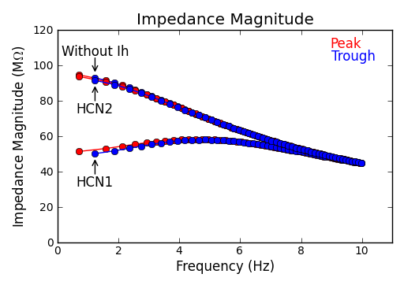
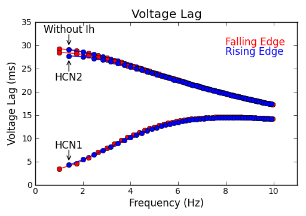
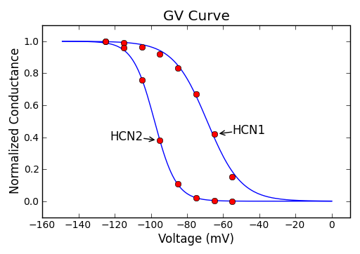
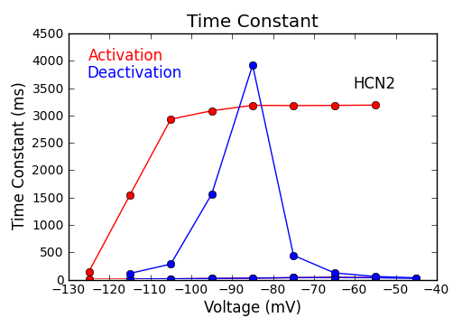
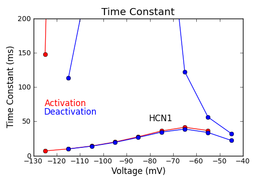

CA1 pyramidal neurons express both HCN1 and HCN2 proteins in their dendrites. Thus, the characteristics of native Ih are between those of HCN1 and HCN2. This note examines the properties of Altomare's HCN1 and HCN2 models (2001). Compared to native Ih, HCN2 is much slower and has a hyperpolarized GV curve. Therefore, HCN1 might be dominant in determing the characteristics of native Ih and HCN2 plays a regulatory role.
Q10 is 4.5. Temperature = 33.
| No Ih | HCN1 | HCN2 | |
| gbar_h (S/cm2) | 0 | 2.2e-5 | 2.2e-5 |
| e_pas (mV) | -65 | -75 | -65.1 |
| Time Constant (ms) | 30.0 | 22.4 | 29.7 |
| Imput Resistance (MΩ) | 95.5 | 50.2 | 93.4 |
| Rebound Slope (mV/mV) | 0.00 | -0.13 | -0.00 |
| Temporal Summation (%) | 43.7 | 2.1 | 42.8 |
| Depolarizing Resonance Frequency (Hz) | 0.6 | 4.6 | 0.6 |
| Hyperpolarizing Resonance Frequency (Hz) | 1.1 | 4.8 | 1.1 |
| Biophysical Properties | |||
| Vhalf (mV) | -68.9 | -98.0 | |
| k (mV) | 9.4 | 6.0 | |
| Activation Tau at -65 mV (ms) | 41.4 | 3185.0 | |
| Deactivation Tau at -65 mV (ms) | 38.7 | 122.5 |



 